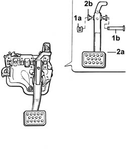
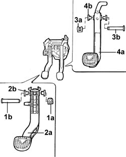

3330B16 PEDAL assembly - dismantling and repairing at the bench
- Path
- Procedures > 33 BRAKES > 3330 HYDRAULIC BRAKING SYSTEM > 3330B PEDAL UNIT > 3330B16 PEDAL assembly - dismantling and repairing at the bench
- Kind
- repair procedure (removal / refitting; the operation number is the code)
- Applies to
- all engines; all production periods
- Interactive page
- https://sloeber94.github.io/elrnDB-lThss/en/#/154736
Applies to: engines: 3.0 V6, 3.2 V6; all production periods
 Removing
Removing
 Refitting
RefittingSee in Op. 4110A10 STEERING WHEEL - R.R. for replacement or checks
See in Op. 7040A26 Steering column TRIM - R.R.
See in Op. 5580C12 CLOCK SPRING for AIR BAG system - R.R.
See in Op. 5550A12 complete stalk unit - r+r for versions with air bag
See in Op. 7040A37 Fuse access cover in instrument panel - R.R.
See in Op. 4110A30 Support with steering control shafts - R.R.
See in Op. 5580A36 Switch on brake pedal for cruise control - R.R.
See in Op. 5580A38 Switch on clutch pedal for cruise control - R.R.
See in Op. 3330B02 PEDAL ASSEMBLY - R.R.
1. Remove the clip (1a) and extract the pin (1b).
2. Remove the brake pedal (2a) and bushes (2b).

Applies to: engines: 3.0 V6, 3.2 V6; all production periods
Refitting
Removing- Position the brake pedal in the housing with the bushes.
- Fit the pin taking care over how it is positioned and securing it using the clip.
See in Op. 3330B02 PEDAL ASSEMBLY - R.R.
See in Op. 5580A36 Switch on brake pedal for cruise control - R.R.
-
See in Op. 5580A38 Switch on clutch pedal for cruise control - R.R.
-
See in Op. 4110A30 Support with steering control shafts - R.R.
-
See in Op. 7040A37 Fuse access cover in instrument panel - R.R.
See in Op. 5550A12 complete stalk unit - r+r for versions with air bag
See in Op. 5580C12 CLOCK SPRING for AIR BAG system - R.R.
See in Op. 7040A26 Steering column TRIM - R.R.
See in Op. 4110A10 STEERING WHEEL - R.R. for replacement or checks
Applies to: engines: 2.0 TB, 2.4 20V, 2.4 JTD 10V, 2.4 JTD 20V; all production periods
Removing
Refitting1. Remove the retaining clip (1a) and extract the pin (1b).
2. Remove the clutch pedal (2a) together with the bushes (2b) and the return spring.
3. Remove the retaining clip (3a) and extract the pin (3b).
4. Remove the brake pedal (4a) and bushes (4b).

Applies to: engines: 2.0 TB, 2.4 20V, 2.4 JTD 10V, 2.4 JTD 20V; all production periods
Refitting
Removing- Position the brake pedal in the housing with the bushes.
- Fit the pin taking care over how it is positioned and securing it using the clip.
- Position the clutch pedal in the housing with the bushes.
- Fit the pin taking care over the return spring and secure it using the retaining clip.
Topics linked from this page (9)
- 3330B02 PEDAL ASSEMBLY - R.R.
- 4110A10 STEERING WHEEL - R.R. for replacement or checks
- 4110A30 Support with steering control shafts - R.R.
- 5550A12 complete stalk unit - r+r for versions with air bag
- 5580A36 Switch on brake pedal for cruise control - R.R.
- 5580A38 Switch on clutch pedal for cruise control - R.R.
- 5580C12 CLOCK SPRING for AIR BAG system - R.R.
- 7040A26 Steering column TRIM - R.R.
- 7040A37 Fuse access cover in instrument panel - R.R.